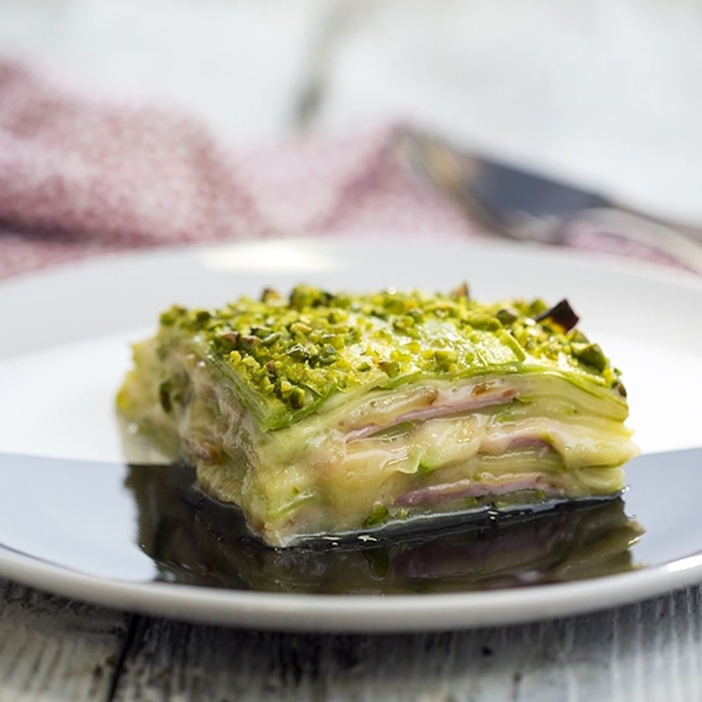

Musaka podľa @bonapeti.bg — Normy Jedál
Мусака от тиквички с шунка и кашкавал. Вижте рецептата тук ➡️ @bonapeti.bg, после кликнете под синята стрелка.
@bonapeti.bg
#musaka #tikvichki #shunka #kashkaval #мусака #тиквички #шунка #кашкавал #bonpaeti #бонапети @bonapeti.bg